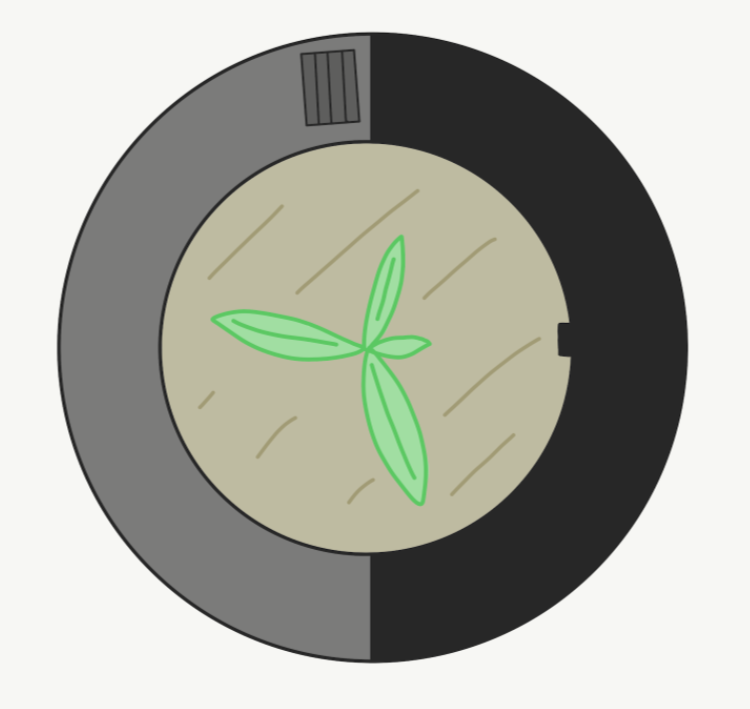
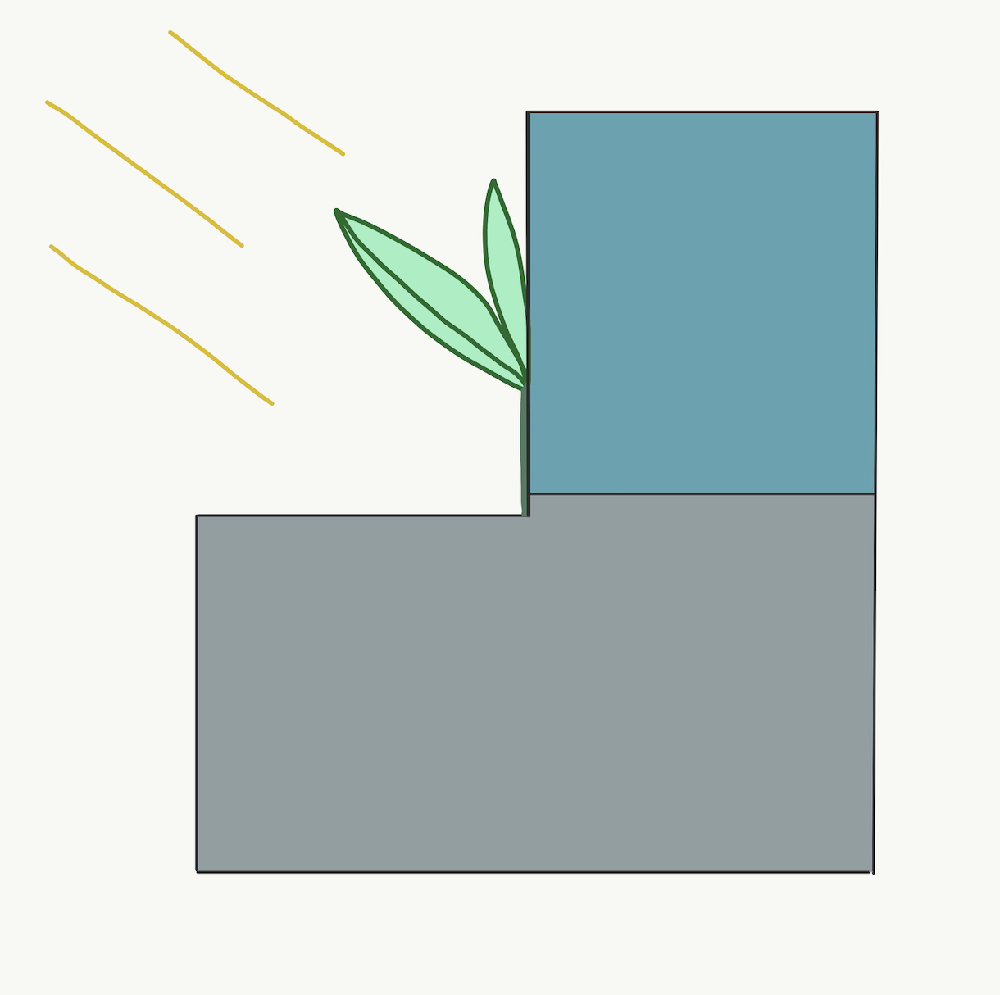
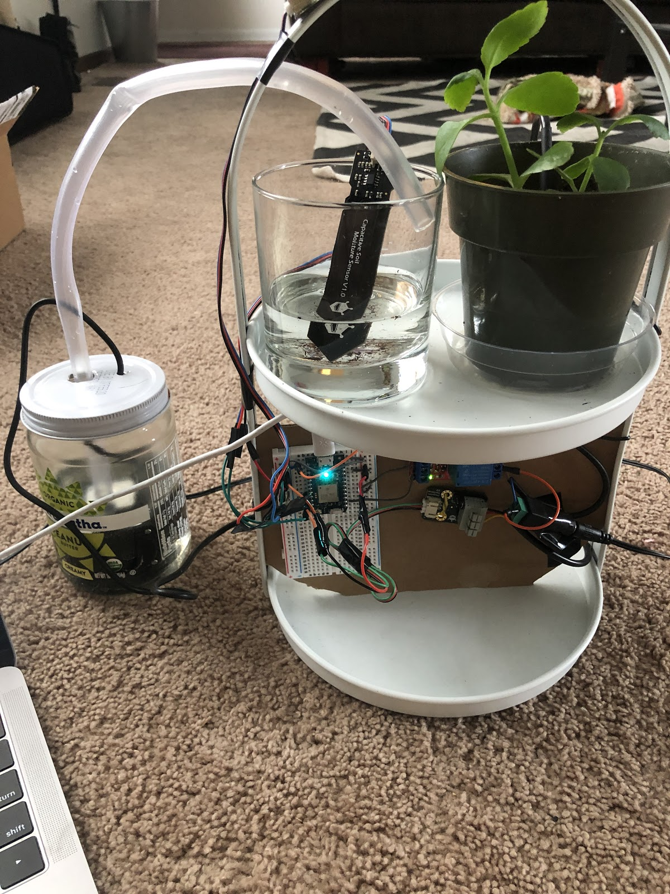

The Caring Pot
MicroProcessor Plant Watering System Prototype - Spring 2020
ENTR 390, a class I took my shophomore year, asked us to ideate and create a product using a microprocessor. Our project had to solve a problem people might face often. Some student chose boxes that rewarded the user for daily habits, others created garage door timers, I chose to make a plant watering system. I have a lot plants but I have always been terrible at knowing when my plants need to be watered, so I created a system that automatically waters. But unlike most systems, this doesn't work off of a timer, but from a soil moisture sensor. It only waters when the plant actually needs water.
Goal
To create a rough prototype of a product using microprocessors.
Design
Below are the drawing I made going through the split views of the product. The container for the system was envisioned to be a cylindrical planter with one side housing all the hardware and water resevoir above it. The design of the tank is supposed allow for sunlight on one side of the plant and water from the other.The caring pot is designed to alleviate the stress of taking care of your small houseplants. The pot can be calibrated to fit the needs of your specific plant, and look stylish and modern on any shelf or window sill.
Hardware
Each of the sensors are to be calibrated to output a reasonable value and wired to ensure
the right amount of power is getting to each component. The pot measures soil moisture,
temperature, and ambient light, then based off the soil moisture value, it will pump water into the pot.
The MircoProcessor used is a Particle Photon, measures only and inch and half. The other components include the
sensors for soil,light,and temperature and the pump. The water pump itself can not run off the power provided by the photon.
It requires 12V and the photon can only provide 4.8V. So I needed a 5V 1 channel relay and a 12V power supply to control when the supply would send
power to the pump. Below is a rough sketch of how the whole system is wired.
*Wires are not color coded
Conclusion
This project was unfourtunately cut short, both on time and resources due to the COVID-19 pandemic. I had intially planned to design a 3D printed planter with the tank included and install the handware into that container. I was also going to create an app that the user could use to log their plants health and monitor the temperature and light of the plant to ensure it was in the best location for that specfic plants needs. I also wanted the app to send the user notification for when the tank needed to be refilled or if the plant's temperature dropped below a certain temperature. With the new skills I have developed over that year I would now be capable of developing a web page for the system to act as a plant dashboard. Or I could create wireframes of the app I had dreamed up.